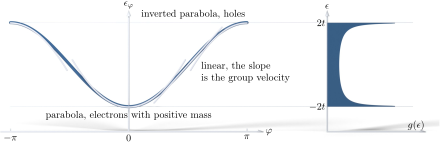

Advanced Quantum Materials 2027 · All lectures · Lecture notes
Session 2. Symmetries, Tight-Binding Band Structure Theory, and Effective Models
2.5 Bloch’s theorem and the first band structure
Let us now do this fully explicitly for the one-dimensional tight-binding chain,
\[H = -t\sum_n \left(c_n^\dagger c_{n+1} + \text{h.c.}\right). \tag{2.5}\]
We take \(t>0\) in all of this session, the same sign convention as in (1.6) of the previous session.
Since \([H,T]=0\), we look for eigenstates that are a superposition over all sites that transforms in a simple way under translation,
\[|\Psi_\varphi\rangle = \sum_n e^{in\varphi}\, c_n^\dagger|0\rangle. \tag{2.6}\]
It is cleaner to invert this relation and to define new operators that are labelled by \(\varphi\) instead of by site,
\[\Psi_\varphi^\dagger = \sum_n e^{in\varphi}\, c_n^\dagger, \qquad c_n^\dagger = \sum_\varphi e^{-in\varphi}\, \Psi_\varphi^\dagger, \tag{2.7}\]
which is an ordinary Fourier transform between real space and the space of Bloch phases. Putting (2.7) into (2.5) gives
\[\sum_n c_n^\dagger c_{n+1} = \sum_{n,\varphi,\varphi'} e^{-in\varphi}\,e^{i\varphi'(n+1)}\, \Psi_\varphi^\dagger \Psi_{\varphi'} = \sum_{\varphi,\varphi'} e^{i\varphi'}\,\delta_{\varphi\varphi'}\, \Psi_\varphi^\dagger\Psi_{\varphi'} = \sum_\varphi e^{i\varphi}\, \Psi_\varphi^\dagger\Psi_\varphi,\]
where the sum over \(n\) gave the orthogonality relation \(\sum_n e^{in(\varphi'-\varphi)} = \delta_{\varphi\varphi'}\). The Hermitian conjugate term gives the complex conjugate phase, so
\[H = -t\sum_\varphi \left(e^{i\varphi}+e^{-i\varphi}\right)\Psi_\varphi^\dagger\Psi_\varphi = \sum_\varphi \epsilon_\varphi\, \Psi_\varphi^\dagger\Psi_\varphi, \qquad \boxed{\epsilon_\varphi = -2t\cos\varphi}. \tag{2.8}\]
This is our first band structure, and we obtained it without writing down an infinite matrix, and without diagonalizing it. We only needed the fact that the eigenstates must have a definite phase under translation, and then a single Fourier transform gave the rest.
Some features of this dispersion should be discussed explicitly, since they appear again and again in the course. Near the bottom of the band (\(\varphi=0\)), \(\epsilon_\varphi \approx -2t + t\varphi^2\), which is a parabola that opens upward. Near the top of the band (\(\varphi=\pi\)), we write \(\varphi=\pi+\delta\) and obtain \(\epsilon_\varphi\approx 2t-t\delta^2\), which is a parabola that opens downward. The two curvatures have opposite sign. Once we define the effective mass properly in Section 2.9, this means that low-energy quasiparticles near the bottom of the band behave like ordinary electrons with positive mass, while those near the top behave like holes with negative mass. Near the middle of the band, at \(\varphi=\pi/2\) where \(\epsilon_\varphi\) crosses zero, the dispersion is closer to linear than to quadratic, and this is a first sign of the Dirac-like physics that we will see in detail in Section 2.11. All of this is shown in figure 2.2, which also shows the density of states of this band.

Notebook check-in: session2.ipynb, “One dimensional chain” (Core)
Build the chain of (2.5), diagonalize it numerically, and check that the numerical spectrum follows \(\epsilon_\varphi=-2t\cos\varphi\) from (2.8) when you scan \(\varphi\) across the Brillouin zone.
A natural extension, which we do in class, is to check that the same method also works beyond nearest-neighbour hopping. We add a second-neighbour hopping term \(-\eta\sum_n(c_n^\dagger c_{n+2}+\text{h.c.})\) to (2.5). This term has the same translational symmetry as before, so the eigenstates (2.6) do not change at all, and we only need to compute the eigenvalues again. We repeat the Fourier substitution for the new term, which couples \(c_n^\dagger\) with \(c_{n+2}\) and so gives a phase \(e^{\pm2i\varphi}\) instead of \(e^{\pm i\varphi}\), and we obtain
\[\epsilon_\varphi = -2t\cos\varphi - 2\eta\cos(2\varphi). \tag{2.9}\]
Notebook check-in: session2.ipynb, “One dimensional chain, with longer range hopping” (Core)
Add the second-neighbour hopping \(\eta\) to the chain from the previous box, and check that the band you compute numerically agrees with (2.9). It is also useful to check the density of states here (Section 2.9), since \(\eta\) can create a second local extremum in \(\epsilon_\varphi\), and with it an additional feature of Van Hove type in the spectrum.
We also mention pyqula by name here, which is a Python package that computes band structures such as this one in 1D, 2D, 3D and higher dimensions, and which is the computational tool we use in the whole course. Here we only give its name. The slides show an explicit installation guide (pip install pyqula) and example scripts for a 1D chain and for a 1D “ladder” with two sites per cell, together with the band plots that these scripts produce. This installation guide and the screenshots of its code are only on the slides, and they are not narrated in the transcript nor reproduced here. The notebook is the place where you run the equivalent code yourself.